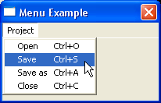

CreateMenu()
语法
Result = CreateMenu(#Menu, WindowID)概要
Creates a new empty menu on the given window.
参数
#Menu A number to identify the new menu. #PB_Any can be used to auto-generate this number. WindowID The window for the new menu. It can be obtained using the WindowID() function.
返回值
Nonzero if the menu was created successfully, zero otherwise. If #PB_Any was used for the #Menu parameter then the generated number is returned on success.
备注
To create a menu with support for images, use CreateImageMenu().
Once created, this menu becomes the current menu for further item additions. It's now possible to use functions such as MenuTitle(), MenuItem(), MenuBar(), OpenSubMenu() to populate the menu.
To handle menu events properly, see the description of following functions:
WaitWindowEvent() (alternatively WindowEvent())
EventWindow()
EventMenu()
示例
If OpenWindow(0, 200, 200, 200, 100, "Menu Example") If CreateMenu(0, WindowID(0)) ; menu creation starts.... MenuTitle("Project") MenuItem(1, "Open" +Chr(9)+"Ctrl+O") MenuItem(2, "Save" +Chr(9)+"Ctrl+S") MenuItem(3, "Save as"+Chr(9)+"Ctrl+A") MenuItem(4, "Close" +Chr(9)+"Ctrl+C") EndIf Repeat : Until WaitWindowEvent()=#PB_Event_CloseWindow EndIf
参阅
CreateImageMenu(), CreatePopupMenu(), CreatePopupImageMenu(), FreeMenu(), MenuTitle(), MenuItem(), MenuBar(), OpenSubMenu()
已支持操作系统
所有